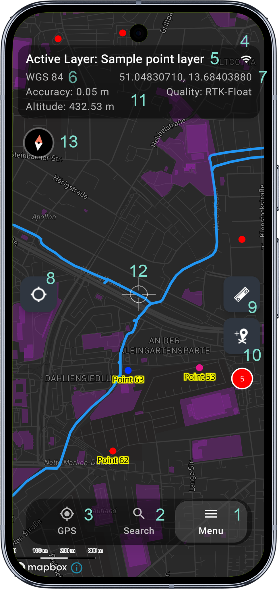
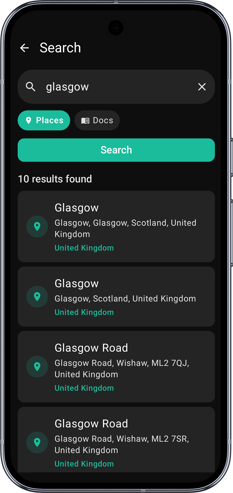
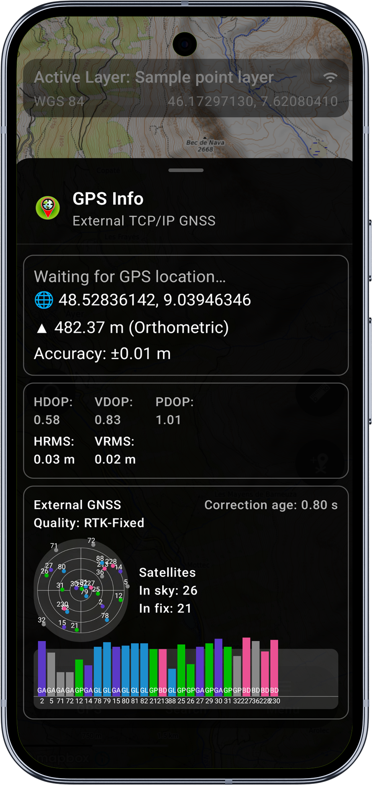
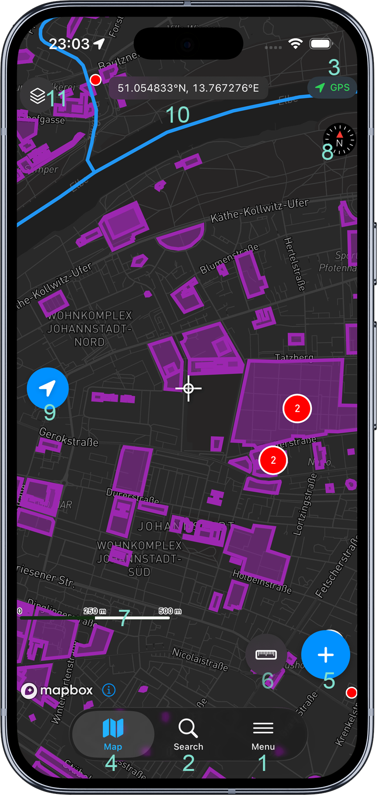
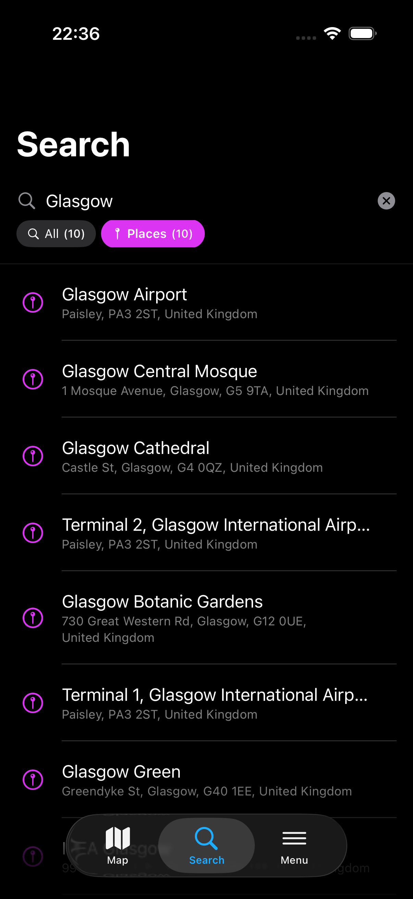
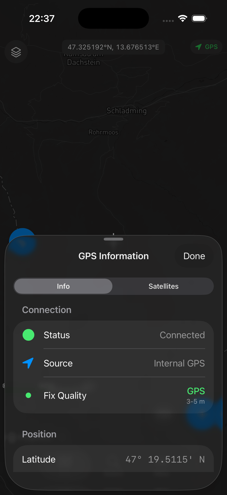
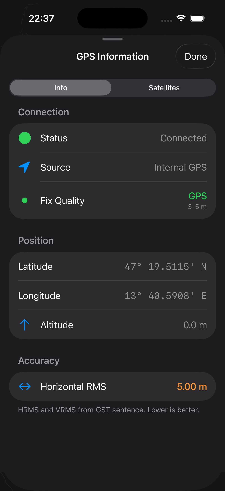

Map Screen
When the app is started you will be presented with the map screen which is the main window of the application. The map state is remembered when you leave the app, and it will always be restored to the state of last session when the app starts. Below you can see description and location of the main elements of the map view.
When the app is started for the first time make sure you select the default working folder and accept necessary app permissions.
- Android
- iOS

1 - Main Menu
Open the main menu to navigate within the app. Easy access to the main application modules. You can get more information about the main menu here.
2 - Search
Search for a place or address. The search results will be displayed in a bottom sheet. Pickup the result to zoom to the location.

3 - Open or close GPS Info Screen
This function is only available when the GPS is enabled. The GPS Info Screen contains information about the current GPS position and the GPS status. The GPS Info Screen is a bottom sheet and can be opened or closed by tapping the GPS icon.

4 - Remote GNSS Connection indication (TCP/BT)
When a remote GNSS connection is established via TCP or Bluetooth the icon will be displayed here. Tap the icon to open the GNSS connection management activity.
5 - Active Map Layer
The active map layer is displayed here. Tap the layer name to open the map layer management activity. This is the layer new features will be added to by pressing 'Add' (10) button.
6 - CRS Info
Currently selected spatial reference system. The default CRS is WGS84 (EPSG:4326), this can be changed in the application settings.
7 - Coordinates Info
The coordinates of the centre of the map view. The coordinates are displayed in the currently selected CRS and contain map cursor location or GPS position if centre on GPS (8) is enabled.
8 - Center on GPS
Enable or disable centring the map view on the current GPS position. When enabled the map view will be centred on the current GPS position and the coordinates' info (7) will display the GPS position. When disabled the map view will be centred on the map cursor location and the coordinates' info (7) will display the map cursor location instead.
9 - Measurement Mode
Enable or disable measurement mode. When enabled the map view will be locked and the measurement tools will be displayed. When disabled the map view will be unlocked and the measurement tools will be hidden.
Long press the measurement mode button to change measurement mode from Lines to Polygon.
10 - Add Feature
Add a new feature to the active map layer. The active layer can be selected in the layer management activity. The icon will be changed to reflect the geometry type of active layer e.g. point, line or polygon.
11 - Scale Bar
Optional additional GPS accuracy, fix quality and altitude info bar. They can be enabled in the application survey settings.
12 - Map Cursor
The map cursor location is displayed in the coordinates' info (7). Map cursor is centred on the map. When Center on GPS (8) is enabled the map will be automatically centred on the current GPS position.
12 - Compass
The compass indicates the map orientation. Tap the compass to reset the map orientation to North up. When the map is oriented to North up the compass will be hidden. The compass is only visible when the map rotation is enabled in the general application settings.

1 - Menu
The Menu tab in the bottom tab bar. Tap to access the main menu where you can manage projects, layers, attributes, styles, online/offline maps, and settings.
2 - Search
The Search tab in the bottom tab bar. Search for a place or address. The search results are displayed in a bottom sheet - tap a result to zoom to the location.

3 - GPS Information
Tap the GPS icon to open the GPS Information sheet. This bottom sheet has two tabs - Info and Satellites. The Info tab shows connection status, GPS source, fix quality, position (latitude, longitude, altitude), and accuracy metrics. Swipe up to expand the sheet and reveal the full detail, or tap Done to close it.


4 - Map View
The Map tab in the bottom tab bar. Tap to return to the map view from other tabs.
5 - Add Feature
Add a new feature to the active map layer. The icon changes to reflect the geometry type of the active layer (point, line, or polygon).
6 - Measurement Mode
Enable or disable measurement mode. When enabled the measurement tools are displayed on the map.
Long press the measurement mode button to switch between Lines and Polygon measurement.
7 - Scale Bar
Displays the current map scale.
8 - Compass
The compass indicates the map orientation. Tap the compass to reset the map orientation to North up. When the map is oriented to North up the compass is hidden.
9 - Centre on GPS
Enable or disable centring the map view on the current GPS position. When enabled the map will follow your GPS position and the coordinates info (10) will display the GPS position. When disabled the coordinates info (10) will display the map cursor location instead.
10 - Coordinates Info
The coordinates of the centre of the map view, displayed in the currently selected CRS.
Long press the coordinates bar to copy the coordinates to your clipboard.
11 - Active Map Layer
On iPhone this is shown as a compact icon due to space constraints. On iPad the layer name is also displayed. Tap to toggle a sheet where you can view all layers and quickly change the active layer.